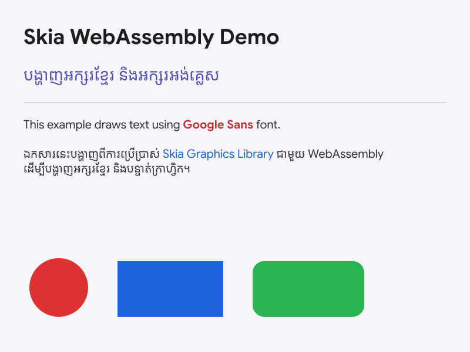

skia
Skia for Web
WebAssembly bindings for the Skia graphics library. Designed for image or document generation — export to PDF, SVG, and PNG with full text layout and custom font support.


Generated by examples/node/index.js
- No GPU (CPU-only, keeps the binary small)
- No browser Canvas API emulation
- No system fonts — all fonts must be loaded manually
- Works in Node.js and browsers
Install
npm install skia
Usage
import { create } from 'skia';
const CanvasKit = await create();
For browsers, import from the browser entry point:
import { create } from 'skia/browser';
const CanvasKit = await create();
Export to PDF, SVG, and PNG
Use PictureRecorder to record drawing commands once and replay them into multiple output formats.
import fs from 'node:fs/promises';
import { create } from 'skia';
const CanvasKit = await create();
const fontData = await fs.readFile('MyFont.ttf');
const fontMgr = CanvasKit.FontMgr.FromData(fontData);
// Record drawing commands
const recorder = new CanvasKit.PictureRecorder();
const canvas = recorder.beginRecording(CanvasKit.LTRBRect(0, 0, 800, 800));
const builder = CanvasKit.ParagraphBuilder.Make(
new CanvasKit.ParagraphStyle({
textStyle: { color: CanvasKit.BLACK, fontSize: 24, fontFamilies: ['My Font'] },
}),
fontMgr
);
builder.addText('Hello, world!');
const paragraph = builder.build();
paragraph.layout(700);
canvas.drawParagraph(paragraph, 50, 100);
const picture = recorder.finishRecordingAsPicture();
// PDF
const doc = new CanvasKit.PDFDocument(new CanvasKit.PDFMetadata());
doc.beginPage(800, 800).drawPicture(picture);
doc.endPage();
await fs.writeFile('output.pdf', doc.close());
// SVG
const svg = new CanvasKit.SVGCanvas(800, 800, 1);
svg.getCanvas().drawPicture(picture);
await fs.writeFile('output.svg', svg.close());
// PNG
const surface = CanvasKit.MakeSurface(800, 800);
surface.getCanvas().drawPicture(picture);
await fs.writeFile('output.png', surface.makeImageSnapshot().encodeToBytes());
// Free WASM memory
paragraph.delete();
builder.delete();
fontMgr.delete();
picture.delete();
recorder.delete();
surface.delete();
Memory management
All CanvasKit objects must be manually freed by calling .delete() when no longer needed. Failing to do so leaks WASM memory.
License
Apache-2.0